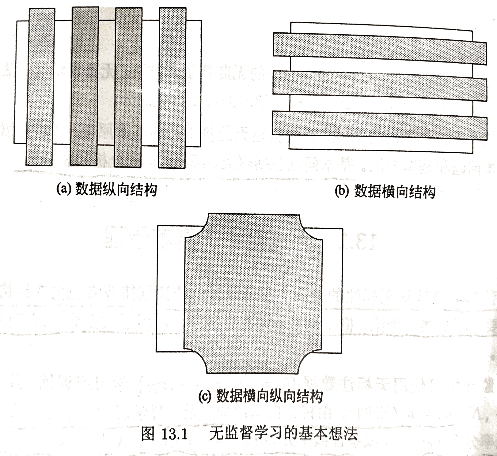

无监督学习的基本问题包括聚类、降纬、话题分析和图分析。
无监督学习是从无标注的数据中学习数据的统计规律或者说内在结构的机器学习，主要包括聚类、降维、概率估计。无监督学习可以用于数据分析或者监督学习的前处理。
无监督学习是一个困难的任务，因为数据没有标注，也就是没有人的指导，机器需要自己从数据中找出规律。无监督学习通常需要大量的数据，因为对数据隐藏的规律的发现需要足够的观测。
无监督学习的基本想法是对给定数据（矩阵数据）进行某种"压缩"，从而找到数据的潜在结构。假定损失最小的压缩得到的结果就是最本质的结构。下图是这种想法的一个示意图（每一列代表一个样本数据；每一行代表数据中的某一个特征）。可以考虑发掘数据的纵向结构，把相似的样本聚到同类，即对数据进行聚类。还可以考虑发掘数据的横向结构，把高维空间的向量转换为低维空间的向量，即对数据进行降维。也可以同时考虑发掘数据的纵向与横向结构，假设数据由含有隐式结构的概率模型生成得到，从数据中学习该概率模型。

1. 聚类
聚类（clustering）是将样本集合中相似的样本（实例）分配到相同的类，不相似的样本分配到不同的类。聚类时，样本通常是欧式空间中的向量，类别不是事先给定，而是从数据中自动发现，但类别的个数是事先给定的。 样本之间的相似度或距离由应用决定。如果一个样本只能属于一个类，则称为硬聚类（hard clustering）；如果一个样本可以属于多个类，则称为软聚类（soft clustering）。
2. 降维
降维（dimensionality reduction）是将训练数据中的样本（实例）从高维空间转换到低维空间。假设样本原本存在于低维空间，或者近似地存在于低维空间，通过降维则可以更好地表示样本数据的结构，即更好地表示样本之间的关系。 高维空间通常是高维的欧氏空间，而低维空间是低维的欧氏空间或者流形（manifold） 。低维空间不是事先给定，而是从数据中自动发现，其维数通常是事先给定的。从高维到低维的降维中，要保证样本中的信息损失最小。 降维有线性的降维和非线性的降维。
3. 概率模型估计
概率模型估计（probability model estimation）,简称概率估计，假设训练数据由一个概率模型生成，由训练数据学习概率模型的结构和参数。概率模型的结构类型. 或者说概率模型的集合事先给定，而模型的具休结构与参数从数据中自动学习。学习的目标是找到最有可能生成数据的结构和参数。概率模型包括混合模型、概率图模型等。概率图模型又包括有向图模型和无向图模型。
同监督学习一样，无监督学习也有三要素：模型、策略、算法。
模型就是函数 ，条件概率分布 ，或条件概率分布。在聚 类、降维、概率模型估计中拥有不同的形式。比如，聚类中模型的输出是类别；降维中模型的输出是低维向量；概率模型估计中的模型可以是混合概率模型，也可以是有向概率图模型和无向概率图模型。
策略在不同的问题中有不同的形式，但都可以表示为目标函数的优化。 比如，聚类中样本与所属类别中心距离的最小化，降维中样本从高维空间转换到低维空间过程中信息损失的最小化，概率模型估计中模型生成数据概率的最大化。
算法通常是迭代算法，通过迭代达到目标函数的最优化，比如，梯度下降法。
层次聚类法、k 均值聚类是硬聚类方法，高斯混合模型 EM 算法是软聚类方法。主成分分析、潜在语义分析是降维方法。概率潜在语义分析、潜在狄利克雷分配是概率模型估计方法。
1. 聚类
聚类主要用于数据分析，也可以用于监督学习的前处理。聚类可以帮助发现数据中的统计规律。数据通常是连续变量表示的，也可以是离散变量表示的。第 14 章将讲述聚类方法，包括层次聚类和 k 均值聚类。
2. 降维
降维主要用于数据分析，也可以用于监督学习的前处理。降维可以帮助发现高维数据中的统计规律。数据是连续变量表示的。第 16 章介绍降维方法的主成分分析，第 15 章介绍基础的奇异值分解。
3. 话题分析
话题分析是文本分析的一种技术。给定一个文本集合，话题分析旨在发现文本集合中每个文本的话题，而话题由单词的集合表示。注意，这里假设有足够数量的文本，如果只有一个文本或几个文本，是不能做话题分析的。话题分析可以形式化为概率模型估计问题，或降维问题。第 17、18、20 章分别介绍话题分析方法的潜在语义分析、概率潜在语义分析、潜在狄利克雷分配。第 19 章介绍基础的马尔可夫链蒙特卡洛法。
4. 图分析
很多应用中的数据是以图的形式存在。图数据表示实体之间的关系，包括有向图、无向图、超图。图分析的目的是发掘隐藏在图中的统计规律或潜在结构。链接分析是图分析的一种，算法包括 PageRank 算法，主要是发现有向图中的重要结构。第 21 章介绍 PageRank 算法。